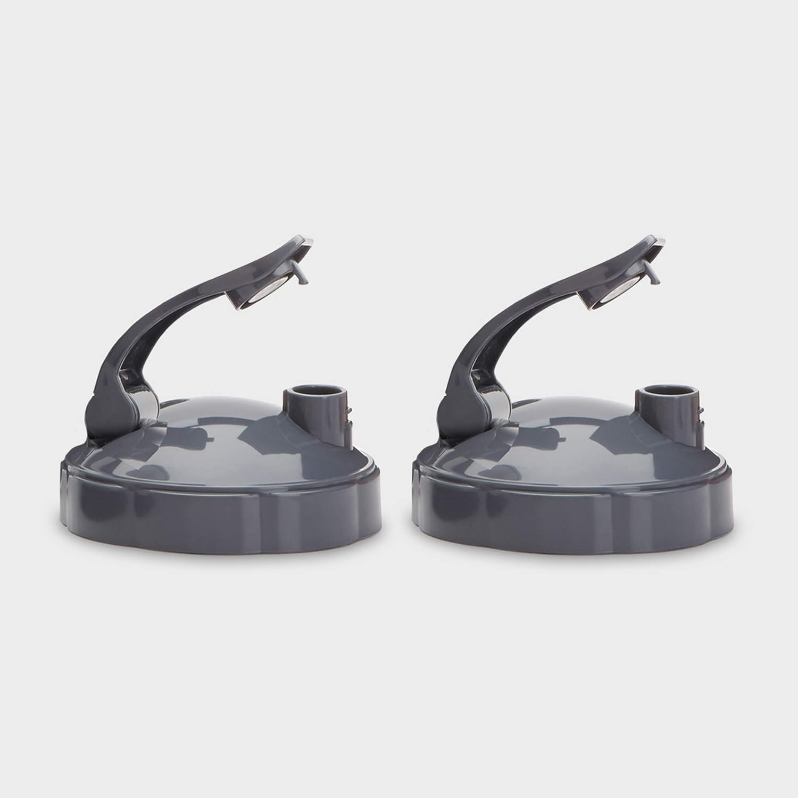

Fits NutriBullet 18oz, 24oz and 32oz cups. This is a compatible replacement part, not an OEM NutriBullet product.

This is a compatible replacement part, not an OEM NutriBullet product.
Check your blender model number (usually printed under the base). Fits NutriBullet 18oz, 24oz and 32oz cups. If your model is not listed, message us on WhatsApp — we reply within 24–48 hours.
No. BlendCraft parts are compatible replacement parts, engineered to match OEM performance at a lower cost.
Yes. All cups, containers and gaskets are BPA-free and food-safe.
Yes. Every part is designed for exact-fit compatibility with the blender models listed.
Yes. We offer 30-day hassle-free returns.
Orders are processed within 1–2 business days. Most orders arrive within 5–10 business days in the US, or 7–15 business days internationally. All orders include tracked worldwide shipping.